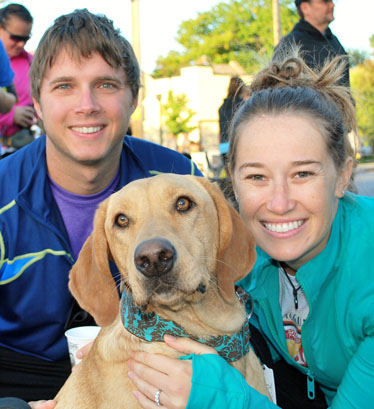

Adoption Process
Due to COVID-19 and Kansas City's Shelter In Place, our shelter is closed to the public. Virtual Pet Adoptions are available by appointment only staring April 24 until the order is lifted.
ADOPTION HOURS:
Our shelter is closed until further notice for adoptions.
Please contact us for an appointment.
| 1 |
Monday |
|
CLOSED |
| 2 |
Tuesday |
|
CLOSED |
| 3 |
Wednesday |
|
CLOSED |
| 4 |
Thursday |
|
CLOSED |
| 5 |
Friday |
|
CLOSED |
| 6 |
Saturday |
|
CLOSED |
| 7 |
Sunday |
|
CLOSED |

Step 1: Download and complete an adoption questionnaire.
This tool enables us to recommend the perfect pet for you.
Step 2: Matchmaking
A team member will assist you in the selection of the perfect pet. After spending some time with the animal, we will review the life and medical history of the pet you are interested in adopting. Together we will make sure the fit is perfect for both your family and the pet.
Step 3: Finalizing the Adoption
- You will be able to take the pet home immediately as long as he/she is medically ready to go home (completed all age appropriate vaccinations and spay/neuter surgery) and you are prepared to leave with your new friend.
- Place a $20 non-refundable hold on the pet, which will hold the animal until the end of business the following business day. If the animal is not adopted during this time, the animal will become available for adoption to other shelter guests.
- We recommend that all members of the household meet the pet chosen for adoption to ensure that the new pet is compatible with everyone.
- If you rent your home, approval from your landlord is required before the adoption becomes final.
- For some pets, we may recommend an introduction with your resident animal to ensure that they will get along. Arrangements for a "dog meeting" will be made during the matchmaking process.
- Some pets may require a post-adoption consultation or training session to ensure the pet is adjusting well to his/her new home.
- All dog and puppies must leave the shelter with an appropriate leash and collar (affordable leashes and collars can be purchased in our store, Whiskers and Wags. All proceeds benefit the animals at Wayside Waifs). All cats and kittens must leave in an appropriate carrier. These can also be purchased at Whiskers and Wags.
Step 4: Heading Home
All of our adoptable pets are ready to go home. If you have a medical question at the time of adoption a member of our veterinary team will be happy to talk with you.
Come Find Us!
Conveniently located in south Kansas City, our newly expanded campus sits on more than 50 beautiful acres.
Featuring a Pet Adoption center, Animal Rescue facility, Bark Park, Behavior & Training facility, Vet Clinic and Pet Memorial Services, Wayside Waifs is more than 50,000 square feet in size.
Get In Contact Instead!
Wayside Waifs Humane Society
3901 Martha Truman Road
Kansas City, MO 64137
816-761-8151